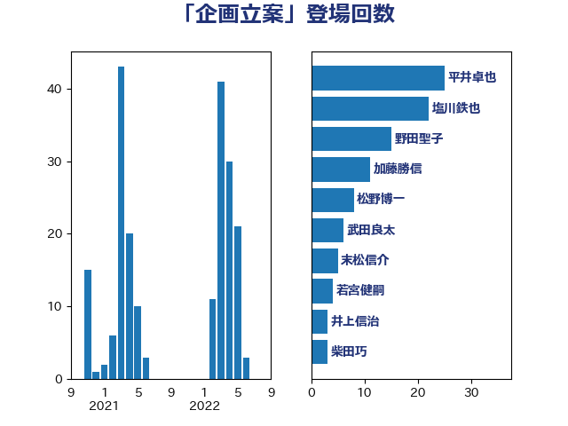

単語「企画立案」

| 平井卓也 | 自由民主党 | 25 回 |
| 塩川鉄也 | 日本共産党 | 22 回 |
| 野田聖子 | 自由民主党 | 15 回 |
| 加藤勝信 | 自由民主党 | 11 回 |
| 松野博一 | 自由民主党 | 8 回 |
| 武田良太 | 自由民主党 | 6 回 |
| 末松信介 | 自由民主党 | 5 回 |
| 若宮健嗣 | 自由民主党 | 4 回 |
| 井上信治 | 自由民主党 | 3 回 |
| 柴田巧 | 日本維新の会 | 3 回 |
| 萩生田光一 | 自由民主党 | 3 回 |
| 務台俊介 | 自由民主党 | 2 回 |
| 小林鷹之 | 自由民主党 | 2 回 |
| 礒崎哲史 | 国民民主党 | 2 回 |
| 笹川博義 | 自由民主党 | 2 回 |
| 舞立昇治 | 自由民主党 | 2 回 |
| 音喜多駿 | 日本維新の会 | 2 回 |
| 高野光二郎 | 自由民主党 | 2 回 |
| 中谷一馬 | 立憲民主党 | 1 回 |
| 伊藤孝江 | 公明党 | 1 回 |
| 坂井学 | 自由民主党 | 1 回 |
| 坂本哲志 | 自由民主党 | 1 回 |
| 城井崇 | 立憲民主党 | 1 回 |
| 堀内詔子 | 自由民主党 | 1 回 |
| 塩崎彰久 | 自由民主党 | 1 回 |
| 塩村あやか | 立憲民主党 | 1 回 |
| 太栄志 | 立憲民主党 | 1 回 |
| 安江伸夫 | 公明党 | 1 回 |
| 安達澄 | 無所属 | 1 回 |
| 山谷えり子 | 自由民主党 | 1 回 |
| 岩本剛人 | 自由民主党 | 1 回 |
| 岸真紀子 | 立憲民主党 | 1 回 |
| 島村大 | 自由民主党 | 1 回 |
| 林芳正 | 自由民主党 | 1 回 |
| 柚木道義 | 立憲民主党 | 1 回 |
| 熊田裕通 | 自由民主党 | 1 回 |
| 牧島かれん | 自由民主党 | 1 回 |
| 田村智子 | 日本共産党 | 1 回 |
| 矢倉克夫 | 公明党 | 1 回 |
| 細田健一 | 自由民主党 | 1 回 |
| 菅義偉 | 自由民主党 | 1 回 |
| 蓮舫 | 立憲民主党 | 1 回 |
| 藤岡隆雄 | 立憲民主党 | 1 回 |
| 赤池誠章 | 自由民主党 | 1 回 |
| 金子恭之 | 自由民主党 | 1 回 |
| 鈴木俊一 | 自由民主党 | 1 回 |
| 高橋はるみ | 自由民主党 | 1 回 |